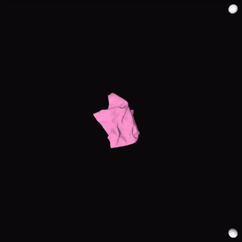
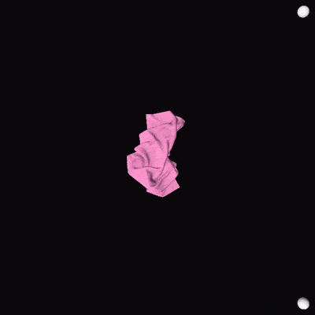

Rollout on rectangular cloth.

Rollout on rectangular cloth.

Rollout on unseen tshirt.

Cloth manipulation is a challenging problem due to cloth’s complex dynamics, almost infinite DoF and severe self-occlusion. Moreover, most cloth manipulation tasks require chaining of multiple action primitives such pick, place, drag fling, stretch, etc. In addition, most of the current cloth manipulation research only use quasi-static actions taking large amount of time to manipulate different garments. Thus our project aims to tackle this complex manipulation problem by imparting the capability of dynamic cloth unfolding to a bimanual robot using a high- velocity dynamic fling action. We focus particularly on the task of cloth unfolding, a typical first step in most cloth manipulation tasks. We trained our self-supervised Value network policy based on Spatial Action Maps. The policy is completely trained on only rectangular cloths in simulation. We have leveraged Softgym simulator and have trained the policy for 7 days on RTX-4070Ti until convergence. The policy achieves a cloth unfolding mean coverage of 95.09% over 200 rollouts on rectangular cloths. Interestingly our policy also generalizes to unseen cloths such as T-shirts while achieving the mean coverage of 87.68%. It also transfers to the real-world cloths in a zero-shot manner without any need of fine-tuning. Real-world results are evaluated on a UR5e dual-arm robot.
"Flingbot: The unreasonable effectiveness of dynamic manipulation for cloth unfolding.", Ha, Huy, and Shuran Song, In Conference on Robot Learning, pp. 24-33. PMLR, 2022.